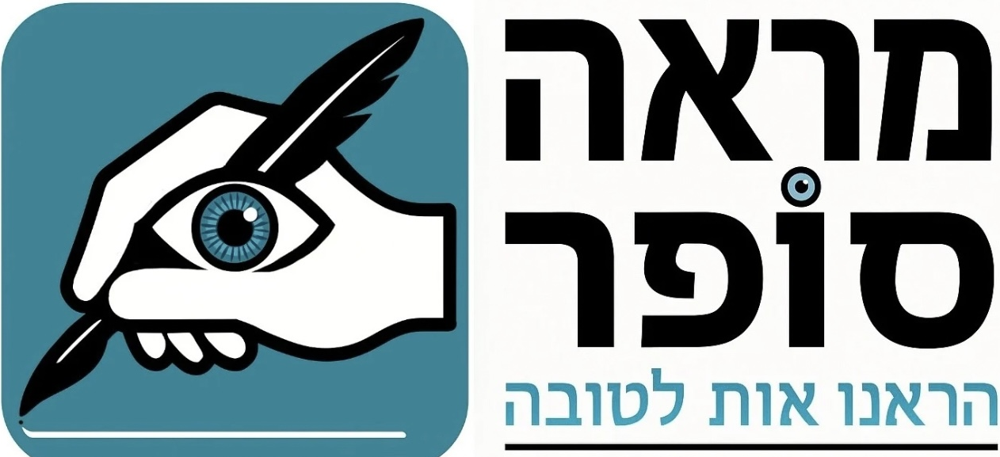
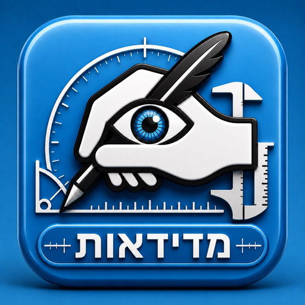

מדידת האות — שטחים, איזון לובן, נוסחת הכתב וגאומטריה


התמונה נטענת ומנותחת מקומית. עובי הקולמוס מזוהה מן הגגות וניתן לתיקון ידני.
בחר אות בית יוסף והנח אותה כתבנית וקטורית על הצילום.
שטח ואיזון לובן: אפשר להוסיף עשרות נקודות סביב התחום. בסיום גע בנקודה הראשונה או לחץ „סיום וסגירת השטח”. מעבר לכלי אחר סוגר אוטומטית שטח תקין; סימון חלקי שאינו יכול להיות מדידה מבוטל.
עיגול מקטע: גע ביהלום שבין שתי נקודות וגרור אותו, או בחר מקטע ולחץ „עיגול המקטע”.
לוח צורת האותיות: כל אות מונחת בגודלה היחסי המקורי מן הלוח, בלי השוואת גבהים. אפשר להזיז, למתוח ולשנות עובי קולמוס בלי לשנות את ממדי האות. מצב עריכת עוגנים מציג את נקודות המסלול ואת ידיות ה־Bézier.
מחיקת נקודה: גע בנקודה כדי לבחור אותה, ולאחר מכן לחץ „מחיקת נקודה”. במצב בחירה ניתן גם לגרור נקודה למקום מדויק.
מגע: מדידה ועריכת נקודות נעשות ב־Apple Pencil בלבד. הזזה וזום נעשים בשתי אצבעות. במחשב אפשר לעבוד בעכבר.
עובי קולמוס: הזיהוי האוטומטי סורק גגות ישרים, מסלק קצוות, ירכות ותגים, ומחשב חציון של חתכים עקביים. אפשר לתקן בקו ידני; בדיקה באזור נשארת כאפשרות מתקדמת.
מרווחים: „זהה בין השיטין” מאתר שורות סמוכות ומודד מתחתית השורה העליונה עד ראש השורה הבאה. יתר סוגי המרווחים ניתנים לסימון ידני. התוצאה מוצגת ביחידות עובי קולמוס.
זווית: שתי נקודות. ברירת המחדל מציגה את הסטייה מן הציר הקרוב, ולכן מתקבלים ערכים כגון 0°, 12° ו־13° ולא זווית משלימה.
קעסטעל: גרור מסגרת סביב האות. „חוק השלישים” מחלק את רוחב הקעסטעל אוטומטית בשני קווים אנכיים. „זהה גג, חלל ומושב” מסמן את הגבול העליון והתחתון של הגג והמושב, מפיק את החלל שביניהם ומציע עובי קולמוס מן הגג; כל גבול ניתן לתיקון ידני.
תוצאות על התמונה: כל מדידה גמורה שומרת את תווית התוצאה שלה. ברשימת „תוצאות כל המדידות” אפשר להציג או להסתיר כל תווית בנפרד, בלי להסתיר את קו המדידה.
שמירת נתונים: קובץ JSON שומר תמונה, כיול, גאומטריה, מדדים וסיווגים. הוא כולל תבנית לכלל איזון של 10%, אך אינו מאמן מנוע בינה לבדו; לשם כך צריך לתייג רכיבים מאומתים ולאגד קבצים במסד נתונים.